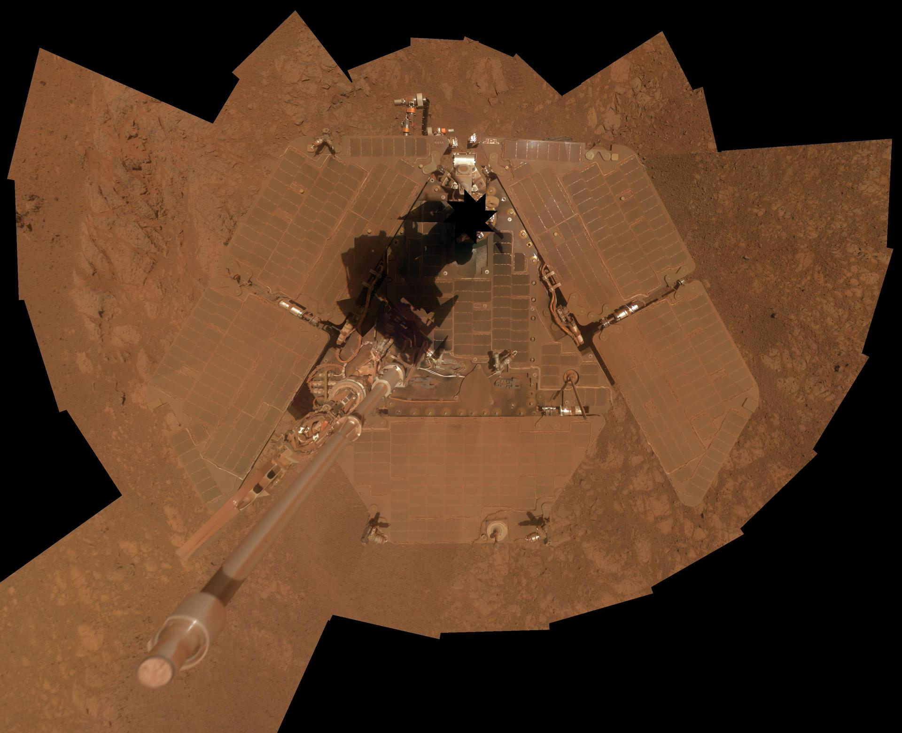

Last Signal
Six NASA machines that went quiet
NASA Space Apps 2026
John Tewolde, team Fourteen Days Dark
Challenge: Abandoned but not Forgotten: Storytelling about NASA's Discarded Equipment on the Moon and Mars
John Tewolde, team Fourteen Days Dark
Challenge: Abandoned but not Forgotten: Storytelling about NASA's Discarded Equipment on the Moon and Mars
Six machines. Six last signals.
 1969Apollo 11 stopped accepting commands, 27 August
1969Apollo 11 stopped accepting commands, 27 August 1977Apollo 12 was shut down, 30 September2003Pioneer 10 sent its last signal, 23 January
1977Apollo 12 was shut down, 30 September2003Pioneer 10 sent its last signal, 23 January
2018Opportunity last heard, 10 June, in a dust storm 2022InSight's last contact, 15 December
2022InSight's last contact, 15 December 2024Ingenuity's mission ended, 25 January
2024Ingenuity's mission ended, 25 JanuaryOne scroll.
One photo each.
One date each.
One photo each.
One date each.
A single line runs through the whole story, and the years thin out as the machines get older.
Built on NASA's own material
PhotographsTen real NASA photos from the NASA Image and Video Library.
Mission pagesEvery date and claim is checked against a saved NASA page.
JPL HorizonsPioneer 10's distance from Earth for any day, from NASA/JPL.
Send a signal to Pioneer 10
Earth
Pioneer 10, about 141 AU away
About 19.6 hours there. Another 19.6 hours back.
Nothing answers.
Nothing answers.
What is real, what is made
RealNASA photographs, last-contact dates, and Pioneer 10's distance from NASA/JPL Horizons.
MadeThe sound is generated in the browser. The signal and the silence are a simulation of the delay; nothing is transmitted.
AI useCode, text and concept were drafted with AI tools (Claude Code) and checked by me. The music in the video was composed with AI-written code.
Last Signal
coderjt-elite.github.io/last-signal
30-second video: link on the submission page (Google Drive)
John Tewolde, team Fourteen Days Dark. Not affiliated with NASA. No NASA logos used.